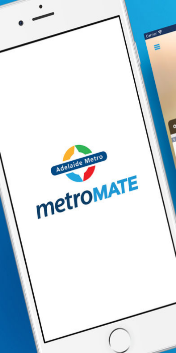
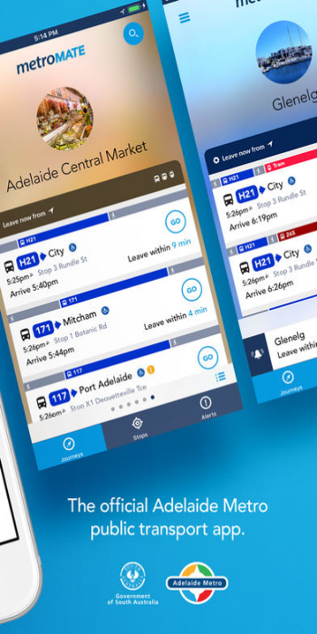
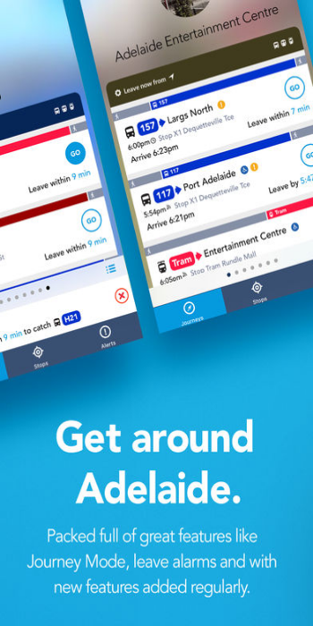
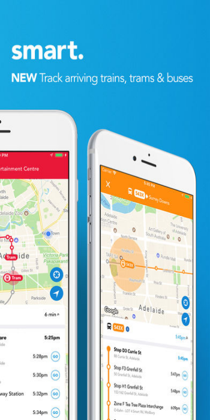

metroMATE by Adelaide Metro
A must-have app for commuters
Welcome to metroMATE, the official South Australian Government public transport app for Adelaide Metro featuring nearby stops mode – we find you and your nearest service via real-time GPS vehicle locations to provide the most accurate stop and journey information. Plan your journey by nominating your favourite destinations and subscribe for alerts direct to your mobile device. See your service as it approaches and set alarms to make sure you're at your stop on time. From all of us at Adelaide Metro, safe travels!